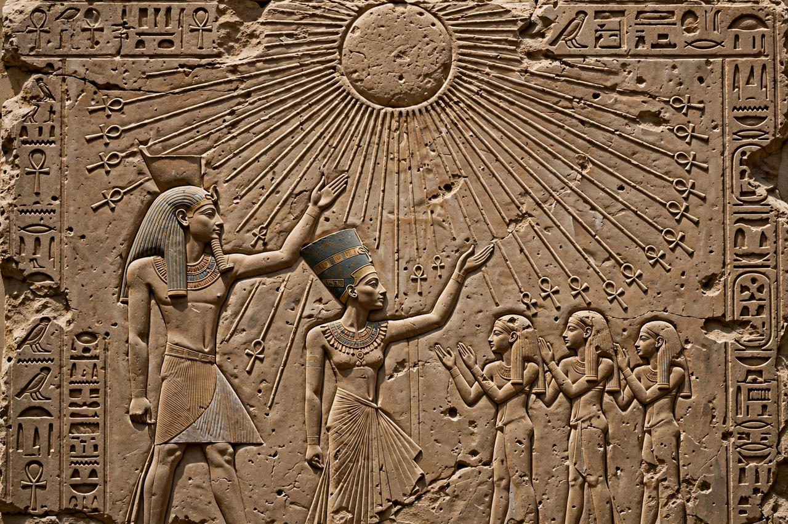

Amarna Period
The Amarna Period was an era of ancient Egyptian history during the second half of the Eighteenth Dynasty, when the royal residence was the newly built city of Akhetaten (modern Amarna) founded by Pharaoh Akhenaten. The period is defined by his religious revolution promoting the sun disc Aten, a distinctive artistic style, and the diplomatic correspondence known as the Amarna letters.

| Period | c. 1353–1336 BC (core reign of Akhenaten) |
|---|---|
| Capital | Akhetaten (Amarna) |
| Key figures | Akhenaten, Nefertiti, Smenkhkare, Tutankhamun |
| Religion | Atenism |
| Major sources | Amarna letters, Boundary Stelae, Great Hymn to the Aten |
Religion
Akhenaten progressively elevated the Aten above all gods, suppressed the cult of Amun, and presented himself and Nefertiti as the sole intermediaries between the Aten and humanity. Scholars debate whether Atenism was true monotheism, monolatry, or henotheism.
Art
Amarna art abandoned the idealised forms of earlier Egyptian art: figures appear with elongated heads and limbs, narrow shoulders, wide hips and swelling bellies, while private reliefs show tender, informal scenes of the royal family. After the period ended, workshops returned to traditional styles, though some naturalism persisted.
Diplomacy: the Amarna letters
Some 380 clay tablets in Akkadian cuneiform, found at Amarna, record correspondence with Babylon, Assyria, Mitanni, the Hittites and Egyptian vassals in Canaan — an unmatched window on Late Bronze Age international politics.
Aftermath
Soon after Akhenaten's death the court abandoned Amarna, Tutankhaten became Tutankhamun and restored the old cults, and Horemheb later dismantled Amarna's monuments for building fill.
See also
Akhenaten · Nefertiti · Atenism · Amarna letters